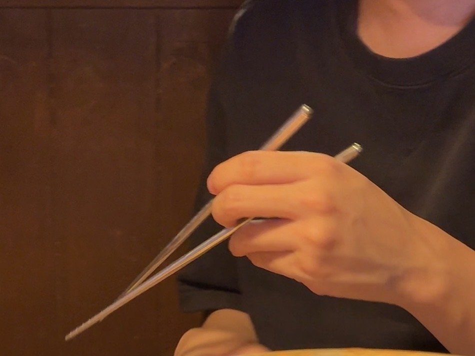

Weekly Drinking Promotion
Association (WDPA)
입력 : 2026년 8월 30일

독특한 방식으로 젓가락을 운용 중인 송병완 상무이사 / 사진=WDPA
매주술권장협회 핵심 운영진이 지난 29일 늦은 밤 경기 용인시 수지구청역 인근에 긴급 집결해 서로의 근황을 점검하고 향후 인생 방향에 대한 심도 있는 대화를 나눈 것으로 확인됐다.
이번 회동은 각자의 일정을 마무리한 뒤 늦은 시각에 급작스럽게 성사됐다.
별도의 사전 일정 조율 없이 촉박하게 만남이 결정됐지만 참석자들은 마치 집합 명령만을 기다리고 있었던 것처럼 빠른 속도로 현장에 모습을 드러낸 것으로 전해졌다.
협회 관계자는 “시간이 늦어 참석률이 낮을 가능성도 고려했지만 우려와 달리 소집 직후 빠르게 인원이 확보됐다”며 “긴급 회동에 대한 운영진의 상시 대응태세가 상당한 수준임을 확인했다”고 평가했다.
운영진은 수지구청역 인근 주점에 자리를 잡고 주류와 각종 안주를 테이블에 배치하며 본격적인 회동을 시작했다.
오랜만에 얼굴을 마주한 만큼 이날은 평소의 적극적인 음주 활동보다는 각자의 최근 근황과 고민, 앞으로의 계획 등 이른바 ‘인생 이야기’를 중심으로 대화가 이어졌다.
참석자들은 서로의 이야기를 들으며 술잔을 기울였고, 늦은 밤 시작된 회동은 비교적 차분하고 진지한 분위기 속에서 진행되는 듯했다.
그러나 평화는 오래가지 않았다.
이날 술자리에서 송병완 상무이사의 젓가락 운용 방식이 참석자들의 시야에 포착되면서 테이블의 주요 의제가 급격히 변경됐기 때문이다.
목격자들에 따르면 송 상무이사는 일반적인 젓가락 사용법과는 상당한 차이를 보이는 독특한 손가락 배열을 활용해 안주를 집기 시작했다.
손가락이 예상하기 어려운 방향으로 교차하고 젓가락이 비정상적인 각도에서 움직였음에도 목표물을 정확하게 확보하는 모습이 반복되자 참석자들은 식사를 중단하고 송 상무이사의 손을 관찰하기 시작한 것으로 알려졌다.
한 참석자는 “처음에는 젓가락질을 잘 못하는 줄 알았다”며 “그런데 저 손 모양으로 계속 음식을 정확히 집는 것을 보고 오히려 고도의 기술일 수도 있다는 생각이 들었다”고 말했다.
현장에서는 해당 기술을 두고 ‘비정형 젓가락 운용기법’, ‘관절 자유형 식사법’ 등 다양한 명칭이 제시되기도 했다.
하지만 논란은 송 상무이사가 정상적인 젓가락질을 선보이면서 새로운 국면을 맞았다.
운영진의 계속된 의문 제기에 송 상무이사가 잠시 손가락의 위치를 바로잡자 놀랍게도 교과서에 가까운 안정적인 젓가락질을 구사한 것이다.
이에 따라 협회 내부에서는 송 상무이사가 젓가락질을 못하는 것이 아니라 동료 운영진의 신경을 자극하기 위해 의도적으로 기괴한 손동작을 유지해온 것 아니냐는 의혹이 즉각 제기됐다.
한 관계자는 “정상적인 젓가락질을 할 수 있다는 사실이 확인된 이상 단순 습관으로 보기 어려워졌다”며 “할 수 있는데 굳이 저렇게 한다는 점에서 사안의 성격이 완전히 달라졌다”고 지적했다.
송 상무이사는 이 같은 의혹에도 이후 다시 기존 방식으로 복귀해 특유의 괴물 같은 손동작으로 안주를 집은 것으로 전해졌다.
협회 관계자는 “정상적인 방법이 있다는 사실을 본인도 알고 있고 실제 구사 능력도 충분하다”며 “그럼에도 왜 저러는지는 아직 아무도 모른다”고 밝혔다.
1차 회동을 마친 운영진은 인근 프라이빗 보컬 퍼포먼스 스튜디오, 통상 ‘코인노래방’으로 불리는 시설로 이동해 2차 문화예술 프로그램을 진행했다.
그런데 입장 직후 예상하지 못한 인적 네트워크가 발견됐다.
해당 시설에서 운영진 중 한 명의 고등학교 동창이 근무하고 있었던 것이다.
오랜만의 우연한 만남에 반가운 인사가 오갔고, 이후 운영진에게 서비스 시간이 지속적으로 추가 제공되면서 당초 계획보다 공연 시간이 크게 연장된 것으로 알려졌다.
한 관계자는 “분명 시간이 끝나가는 것 같았는데 다시 시간이 늘어나 있었다”며 “인적 네트워크가 문화예술 향유시간 확대에 직접적인 영향을 미친 사례”라고 평가했다.
예상보다 넉넉한 공연시간을 확보한 운영진은 사실상 목의 내구성 한계에 도달할 때까지 연이어 노래를 부르며 무대를 이어갔다.
이 과정에서 해당 시설이 테라 맥주를 판매한다는 사실까지 확인되면서 각자 한 캔씩을 추가 확보했고, 차갑게 냉각된 맥주를 곁들인 보컬·주류 융합형 공연 체제가 구축됐다.
특히 이날 2차 일정에서는 송병완 상무이사의 가창력이 다시 한번 주목받았다.
앞서 젓가락 운용 방식으로 운영진을 혼란에 빠뜨렸던 송 상무이사는 마이크를 잡은 뒤에는 안정적인 음정과 뛰어난 가창력을 선보이며 전혀 다른 모습을 보였다.
참석자들은 송 상무이사의 노래가 이어질 때마다 감탄을 나타냈고, 일부 곡에서는 사실상 개인 콘서트를 방불케 하는 분위기가 형성된 것으로 전해졌다.
한 참석자는 “젓가락은 왜 그렇게 잡는지 아직도 이해할 수 없지만 마이크를 잡는 방법만큼은 정확했다”며 “오늘 확인된 것 중 가장 확실한 사실은 송 상무이사가 노래를 정말 잘한다는 것”이라고 말했다.
운영진은 서비스 시간을 모두 소진할 때까지 노래와 맥주를 즐긴 뒤 늦은 시간 회동을 마무리했다.
한편 협회 내부에서는 이번 회동을 계기로 송병완 상무이사의 비정형 젓가락질이 단순한 개인 습관인지, 동료 운영진의 반응을 유도하기 위한 계획적 도발 행위인지에 대한 진상규명이 필요하다는 목소리가 나오고 있다.
특히 관련 행위가 촬영된 사진자료까지 확보됨에 따라 협회는 향후 손가락 배치와 젓가락 각도 등을 정밀 분석해 고의성 여부를 판단한다는 방침이다.